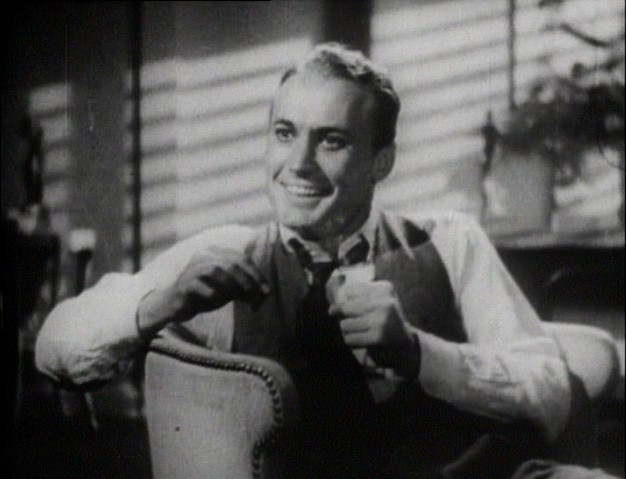

Reefer Madness, frame at 57:37
Louis J. Gasnier · 1936 · Film, black and white (frame)
Free to use
The film was made as Tell Your Children, financed by a church group that meant it to be shown to parents. The exploitation producer Dwain Esper later bought it, added salacious shots and sent it round the circuit under a different title in each territory. Neither he nor the original producer, George Hirliman, protected the copyright. In spring 1972 the founder of NORML found a copy at the Library of Congress and bought a print for $297.